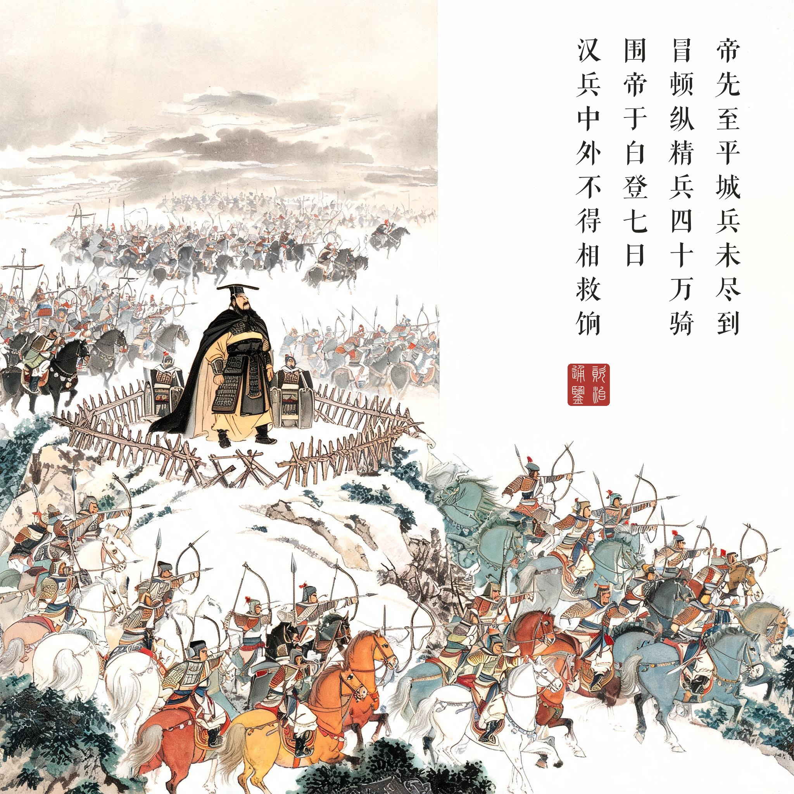
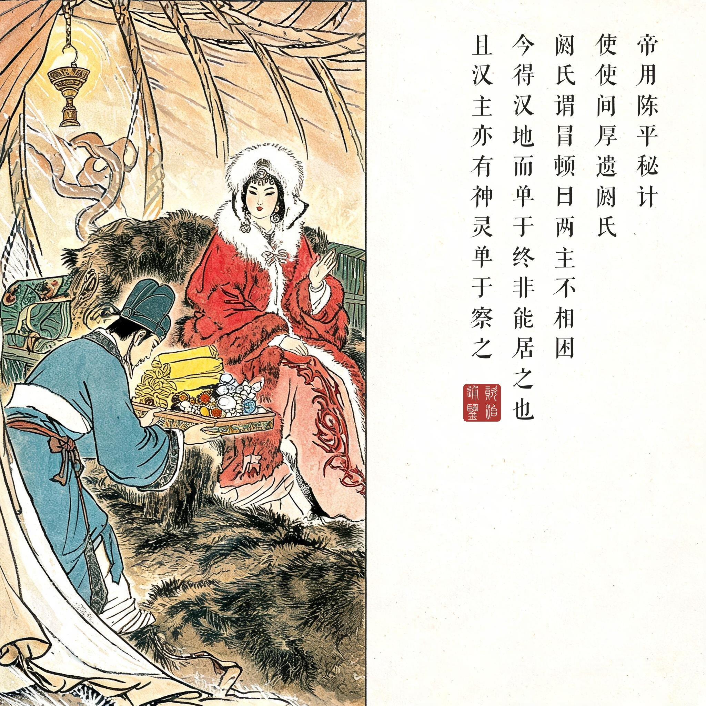
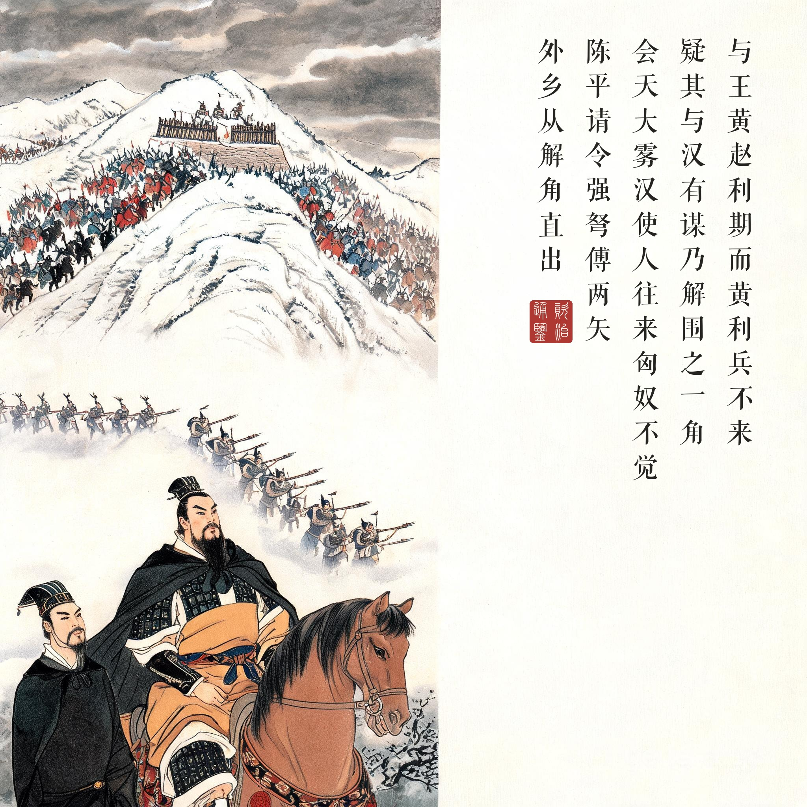
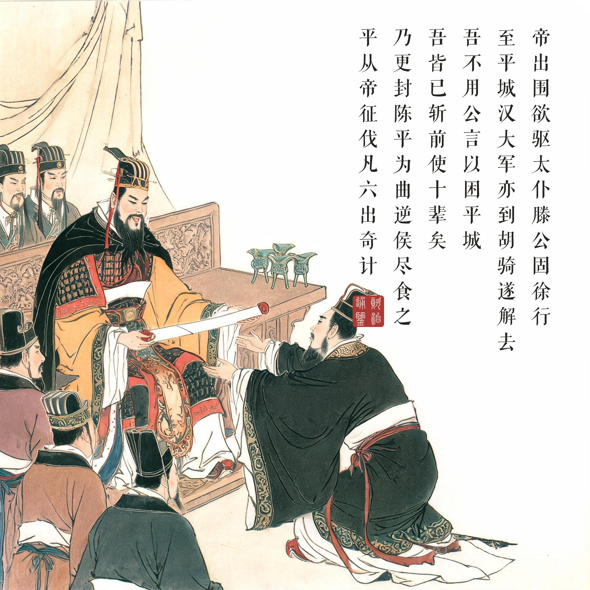

《资治通鉴 · 卷第十一 · 汉纪三》太祖高皇帝下之上七年（公元前 200 年）
（据 daizhigev20《资治通鉴》底本节录）
帝先至平城，兵未尽到；冒顿纵精兵四十万骑，围帝于白登七日，汉兵中外不得相救饷。……帝用陈平秘计，使使间厚遗阏氏。阏氏谓冒顿曰：“两主不相困。今得汉地，而单于终非能居之也。且汉主亦有神灵，单于察之！”冒顿与王黄、赵利期，而黄、利兵不来，疑其与汉有谋，乃解围之一角。会天大雾，汉使人往来，匈奴不觉。陈平请令强弩傅两矢，外乡，从解角直出。帝出围，欲驱；太仆滕公固徐行。至平城，汉大军亦到，胡骑遂解去。……上至广武，赦刘敬，曰：“吾不用公言，以困平城；吾皆已斩前使十辈矣。”乃封敬二千户为关内侯，号为建信侯。帝南过曲逆，曰：“壮哉县！吾行天下，独见洛阳与是耳。”乃更封陈平为曲逆侯，尽食之。平从帝征伐，凡六出奇计，辄益封邑焉。
皇帝（刘邦）先到平城，大军还没全部赶到；冒顿放出精兵四十万骑兵，把皇帝围在白登山整整七天，汉军内外不能相救、运不上粮饷。……皇帝用陈平的秘计，派使者暗中送厚礼给阏氏。阏氏对冒顿说：“两主不相困。就算得了汉地，单于也终究不能住在那里。况且汉主也有神灵保佑，单于明察！”冒顿本来与王黄、赵利约期会师，黄、利的兵没来，怀疑他们与汉朝有勾结，于是解开包围圈的一角。恰逢天降大雾，汉军使者往来出入，匈奴都没有察觉。陈平请求下令强弩上搭双箭、箭头朝外，从解开的那个角直接冲出。皇帝出了包围圈想纵马快跑，太仆滕公坚持缓缓而行。到平城时，汉朝大军也到了，胡骑这才解围退去。……皇帝回师路过广武，赦免了刘敬，说：“我没用你的话，以致被困平城；我已经把前面那十批使者都斩了。”封刘敬两千户为关内侯，号建信侯。皇帝南行路过曲逆，感叹说：“壮哉此县！我走遍天下，只见过洛阳能和它相比。”于是改封陈平为曲逆侯，食邑尽归其有。陈平跟随皇帝征伐，前后六出奇计，每次都增加封邑。
一场把战略常识打碎的遭遇战。白登之围的起因是一个战略判断的傲慢：刘邦听说冒顿驻代谷，派十批使者侦察，使者个个回报“匈奴可击”——他们看到的都是老弱残兵。只有刘敬看出这是示弱诱敌。三十二万步卒对四十万骑兵，机动力的代差在白登山上被放大成七天七夜的死局：援兵到不了，粮草运不进，汉家天子第一次体会到草原帝国的组织力。《通鉴》开卷第一篇“三家分晋”讲的是礼崩，这一篇讲的是力量格局的重新认知——汉初七十年对匈奴的和亲忍让，都是从白登山七天里学来的。
看不见的计，看得见的外交。陈平的秘计连司马迁都写不出细节，“世莫得闻”。但《通鉴》保留了结果链条：厚遗阏氏→枕边进言→两主不相困的草原逻辑→冒顿对王黄赵利的怀疑→解围一角。值得留意的是阏氏那段话说的其实是匈奴的实情：游牧政权拿不下农耕土地，抢得走、守不住——这句话日后由中行说、贾谊、晁错反复论证，成了汉匈关系的战略底色。天降大雾是运气，强弩傅两矢是谨慎，滕公徐行是定力——从解围一角到全身而退，每一步都不冒进。
认错的艺术。回程的两个封赏是本回的文眼：刘敬封关内侯，刘邦当面说“吾不用公言”——诛十辈使者之后认错封谏臣，这个动作的政治价值不亚于解围本身；陈平改封曲逆、尽食其县，六出奇计的账都记在封邑上。读画人可注意：四幕里皇帝的姿态从山头的坚忍、到突围的克制、到最后帐中解颜，是一条情绪的弧线；而冒顿始终不出场——四十万骑兵是他，围开一角也是他，草原雄主只以阵形存在。